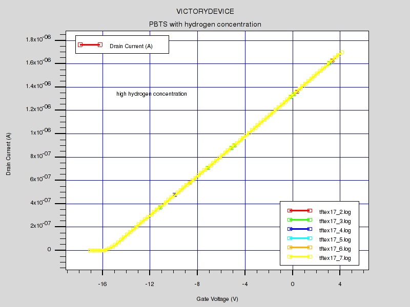
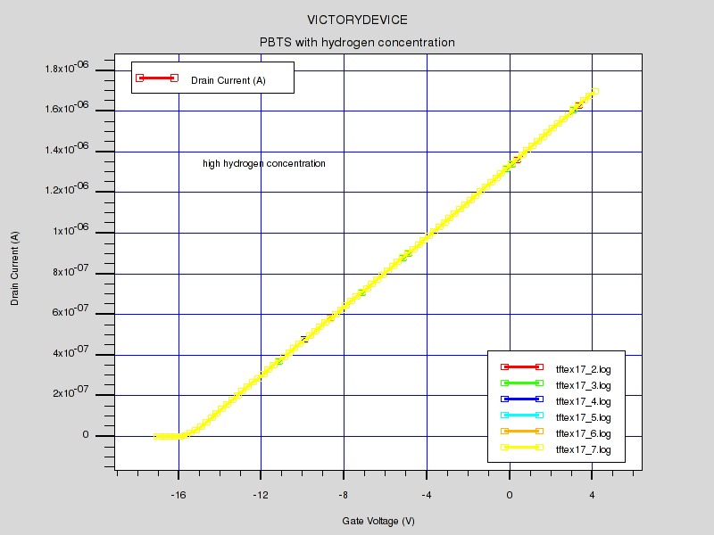
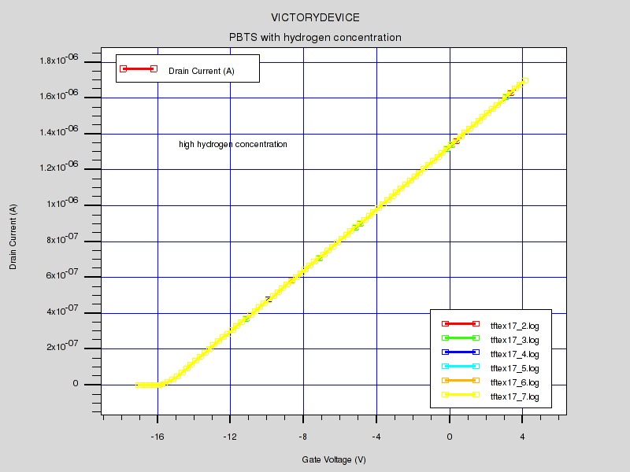

| Requires: | Victoryprocess/Vicitorydevice |
| Minimum Versions: | Victory Process: 7.22.3.R, Victory Mesh 1.2.4.R, Victory Device 1.12.1.R |

In this example, we demonstrate the Positive Bias Temperature Stress simulation due to electron trapping by oxygen related trap, and the role of hydrogen passivation in InGaZnO TFT device. In Victoryprocess part, we simulate the hydrogen diffusion in etch stopper
process. The partial pressure during etch stopper process show the different hydrogen concentration.
In Victorydevice, we simulate the electrochemical reaction formula for explaining the positive threshold voltage shift by electron trapping as well as hydrogen passivation forming OH-(Hydroxyl) bond.
The hydrogen atom is a donor in a-IGZO material when it forms to make a OH-(Hydroxyl) bond
as well as it passivate the neutral precursor state(electron trap site: O(neutral)).
This neutral precursor trap can be an electron trapping state or passivated by hydrogen atom.
We simulated the hydrogen passivation reaction and electron trapping reaction using chemical ion reaction/transport model in Victorydevice.
-To simulate hydrogen diffusion process, we used material/interface statement to modify a default hydrogen
diffusion coefficient in Victoryprocess.
-The hydrogen concentration depending on partial pressure is adjusted in etch stopper deposition,
and it diffuse in subsequent diffusion process.
After hydrogen diffusion process and structure formation, initial hydrogen concentration is imported from Victoryprocess using
doping f.doping=tftex17_0.c species.name="H"
This C-interpreter function reads hydrogen profile from process structure.
After reading hydrogen concentration, we define each ion's charge state.
In this example, IGZO is the neutral precursor state which is an electron trap.
It will decompose to negatively charged state(IGZO-) by electron trapping and neutral
passivated state(IGZOH) by hydrogen passivation. The overall hydrogen passivation rate is affected by hydrogen concentration ,
reaction rate of passivation, and hydrogen diffusion.
species formula="H" charge=0 name="H"
species formula="In:Ga:Zn:O2" charge=0 name="IGZO"
species formula="In:Ga:Zn:O2" charge=-1 name="IGZO-"
species formula="In:Ga:Zn:O2:H" charge=0 name="IGZOH"
In this example, we only consider interface trap concentration using interface command.
User can add bulk dopig using doping statement as we demonstrate in tftex16 example.
interface s.i x.min=-12.0 x.max=12.0 y.min=-0.21 y.max=-0.19 \ species.name="IGZO" concentration=8e11
interface s.i x.min=-12.0 x.max=12.0 y.min=-0.21 y.max=-0.19 \ species.name="IGZO-" concentration=1e10
interface s.i x.min=-12.0 x.max=12.0 y.min=-0.21 y.max=-0.19 \ species.name="IGZOH" concentration=1e10
Total amount of neutral precursor trap concentration at th front interface is 8e11/sqcm.
This trap will decompose to passivated state(IGZOH) and electron trapping state(IGZO-) depending on the hydrogen
concentration.
For drift-diffusion simulation of hydrogen atom during applied bias and temperature,
we need to define the diffusion coefficient. Other ion species is immobile. In this example, we assumed the same
diffusivity over all regions.
material species.name="H" species.ea=0.35 species.af=1e3 species.hop=1e-6
Next, we define the chemical reaction formula using "reaction" command.
(1) reaction formula="IGZO + H <=> IGZOH" forward.rate=2e-17 forward.ea=0 reverse.rate=1e-15 reverse.ea=1.5
(2) reaction formula="IGZO + e- <=> IGZO-" forward.rate=1e-10 forward.ea=0.83 reverse.rate=1e-15 reverse.ea=1.5
The probe statement measure the occupation probability of each ion speceis and concentration at the front interface during stress time.
probe x=0.0 y=-0.2 material=IGZO ft.species="IGZO"
probe x=0.0 y=-0.2 material=IGZO ft.species="IGZO-"
probe x=0.0 y=-0.2 material=IGZO ft.species="IGZOH"
probe x=0.0 y=-0.2 material=IGZO species.name="IGZO"
probe x=0.0 y=-0.2 material=IGZO species.name="IGZO-"
probe x=0.0 y=-0.2 material=IGZO species.name="IGZOH"
The simulation starts to get the intial threshold voltage.
Then, PBTS simulaton proceeds with stress voltage of "Vgs=+20V + intial threhold voltage"
to maintain the constant stress voltage.
After obtaining stress solution, it is saved to different structure file to get the threshold voltage shift at each time.
tftex17.doe is a simple doe file which select different hydrogen concentration(low/med/high), and it load tftex17.in file which simulate the hydrogen concentration effect on PBTS at each hydrogen concentration from tftex17.doe file.
To load and run this example, select the Load button in DeckBuild > Examples. This will copy the input file and any support files to your current working directory. Select the Run button in DeckBuild to execute the example.